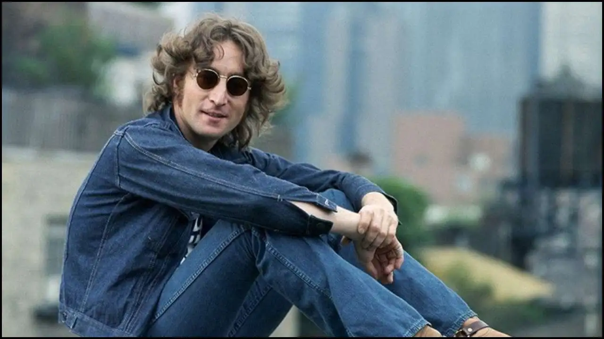

La Vita
John Lennon nacque il 9 ottobre 1940 a Liverpool e morì l’8 dicembre 1980 a New York.
Egli venne ucciso a colpi di arma da fuoco l’8 dicembre 1980 davanti al suo palazzo, il Dakota Building da Mark David Chapman.
I suoi genitori erano Alfred Lennon, marinaio e Julia Stanley.
Ebbe una famiglia complessa fin dall’infanzia ma da giovane trovò nella musica
un modo per esprimersi. Si sposò prima con Cynthia Powell con cui ebbe il figlio Julian Lennon e successivamente con Yoko Ono dalla quale nacque il secondo figlio Sean Lennon.
John Lennon è stato un cantante, musicista e compositore britannico famoso soprattutto per essere stato uno dei fondatori dei Beatles, gruppo che rivoluzionò la musica moderna e influenzò profondamente la cultura giovanile degli anni Sessanta. Dopo lo scioglimento dei Beatles, proseguì una carriera da solista usando la musica anche come strumento di riflessione sociale.
La zia Mimi era severa e tradizionale, mentre Julia rappresentava per John una figura più libera e creativa. Fu proprio Julia a introdurlo alla musica insegnandogli a suonare il banjo e incoraggiando il suo interesse per il rock’n’roll. Questo contrasto tra disciplina e ribellione segnò profondamente la personalità di Lennon.
A scuola John era intelligente ma indisciplinato e provocatorio.

Frequentò la Quarry Bank High School dove iniziò a distinguersi più per il suo umorismo sarcastico e l’attitudine ribelle che per i risultati accademici. Nel 1956 fondò il suo primo gruppo, The Quarrymen, che sarebbe poi diventato il nucleo iniziale dei Beatles. Un evento decisivo e traumatico fu la morte della madre Julia nel 1958, investita da un’auto. Questo lutto lascia un segno profondo nella sua vita emotiva e influenzò molte delle sue canzoni future. Questi primi anni, segnati da instabilità familiare, perdita e scoperta della musica, furono fondamentali nel plasmare il carattere, la sensibilità artistica e la visione del mondo di John Lennon. Si impegnò attivamente per la pace e la non-violenza, soprattutto durante la guerra del Vietnam. Con Yoko Ono organizzò proteste pacifiche come i “Bed-In for Peace”, attirando l’attenzione dei media internazionali. Attraverso canzoni come “Imagine”, in cui immagina un mondo senza guerre, e “Give Peace a Chance”, divenuta un inno pacifista, invitò le persone a superare odio e divisioni. John Lennon è ricordato non solo come un grande artista , ma anche come un simbolo di pace, convinto che la musica potesse aiutare a cambiare il mondo.